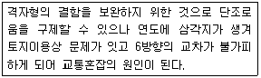
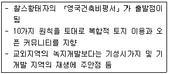
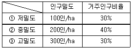
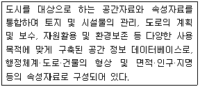
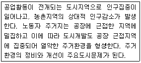
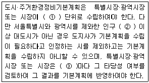
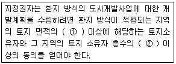
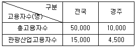
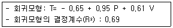
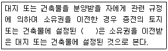

도시계획기사 (2010-05-09 기출문제)
1과목: 도시계획론
1. 다음 중 도시공간구조 이론인 Hoyt의 선형이론에서, 선형 형태를 형성하는데 영향을 주는 핵심적인 요인은?
- 가로변 상업지역
- 공업단지의 입지
- 고소득층의 주거지역
- 저소득층의 주거지역
(정답률: 알수없음)

2. 다음 중 용도지역과 그 지정목적의 연결이 옳은 것은?
- 제1종 전용주거지역: 저층주택을 중심으로 편리한 주거환경을 조성하기 위하여 필요한 지역
- 근린상업지역: 일반적인 상업기능 및 업무기능을 담당하게 하기 위하여 필요한 지역
- 준공업지역: 환경을 저해하지 아니하는 공업의 배치를 위하여 필요한 지역
- 보전녹지지역: 도시의 자연환경·경관·산림 및 녹지공간을 보전할 필요가 있는 지역
(정답률: 알수없음)
3. 다음 중 경관관리의 기본원칙으로 가장 옳은 것은?
- 관광객과 외부인의 생활 및 경제활동과의 긴밀한 관계 속에서 이들의 합의를 통해 양호한 경관이 유지될 수 있도록 관리할 것
- 우수한 경관을 보전하고 훼손된 경관을 개선·복원하고 새롭게 형성되는 경관은 개성있는 요소를 가지도록 유도할 것
- 각 지역의 경관이 보편성을 가질 수 있도록 하며, 지역주민의 참여를 배제할 것
- 개발과 관련된 행위는 주변 경관과 별도의 이미지를 갖도록 특성화 할 것
(정답률: 알수없음)
4. 다음 설명과 같은 특징을 갖는 가로망의 형태는?

- 방사환상형
- 방사형
- 격자사선형
- 루프형
(정답률: 알수없음)
5. 다음 중 1893년 시카고에서 개최된 만국박람회를 계기로 D. Burnham의 도시디자인 철학에 따라 모든 도시들은 역사적 공간에 오픈스페이스를 확보하고 광장과 정원에 분수를 설치하도록 하였으며 도시규모에 따라 공공건축물을 규제하였던 것으로, 이후 미국 도시설계의 기원을 이룬 것은?
- 도시미운동
- 전원도시운동
- 보아잔계획
- 이상도시론
(정답률: 알수없음)
6. 다음 중 생태도시(Eco City)의 특징으로 옳지 않은 것은?
- 건물과 사람이 친화되는 체계를 갖춘 도시다.
- 환경의 활용과 보전을 도모한다.
- 생태계 측면에서 보다 다양하고 자립적이며 안정적인 순환구조를 갖는 도시다.
- 유사한 개념으로 전원도시(garden city), 녹색도시(green city)가 있다.
(정답률: 알수없음)
7. 다음 중 일반적인 도시화의 진행단계를 옳게 나열한 것은?
- 분산적 도시화→집중적 도시화→역도시화
- 집중적 도시화→분산적 도시화→역도시화
- 역도시화→집중적 도시화→분산적 도시화
- 분산적 도시화→역도시화→집중적 도시화
(정답률: 알수없음)
8. 다음 중 아래의 설명과 같은 특징을 갖는 것은?

- 뉴어바니즘(New Urbanism)
- 전통이웃개발(Traditional Neighborhood Development)
- 어반빌리지운동(Urban Village Movement)
- 도시미운동(City Beautiful Movement)
(정답률: 알수없음)
9. 도시기반시설은 목적 측면에서 사익의 추구인가 공익의 추구인가로 구분하고 도시 내 존재의 필요성에 따라 필수성과 선택성으로 구분한다. 이를 4가지의 유형으로 분류하면 공익성·필수성이면 공공재의 성격이 강하고 사익성·선택성이면 민간부문에 의한 공급이 가능하다. 다음 시설 중 민간부문에 의한 공급 가능성이 가장 높은 것은?
- 사회복지시설
- 문화시설
- 수영장
- 학교
(정답률: 알수없음)
10. 시가지 확산, 환경의 퇴락, 농토와 임야의 감소 등 당면한 도시문제를 개선하기 위하여 제시된 도시개발 패러다임인 뉴어바니즘(New Urbanism)의 원칙과 가장 거리가 먼 것은?
- 근린주구는 용도와 인구에 있어서 다양하여야 한다.
- 커뮤니티 설계에 있어서 자동차뿐만 아니라 보행자와 대중교통도 중요하게 다루어야 한다.
- 가정, 직장, 상업·여가시설 등의 도시생활에 필요한 요소들을 콤팩트하게 구성한다.
- 해당지역의 경제적·사회적·환경적 상태를 지속적으로 개선하여 기존 도심의 재활성화를 도모한다.
(정답률: 알수없음)
11. 다음 중 도시관리계획의 내용에 해당하지 않은 것은?
- 용도지역·용도지구의 지정 또는 변경에 관한 계획
- 기반시설의 설치·정비 또는 개량에 관한 계획
- 도시개발사업이나 정비사업에 관한 계획
- 공간구조, 생활권의 설정 및 인구의 배분에 관한 사항
(정답률: 50%)
12. 다음 중 르꼬르뷔제(Le Corbusier)가 1902년대에 제안한 현대도시 계획안에서의 도시계획과 설계이론을 구성하는 요소에 해당하지 않는 것은?
- 수직적 건물구성
- 고층 건물 사이의 충분한 녹지공간
- 보차접근의 분리
- 도시중심부의 대규모 상징적 오픈스페이스
(정답률: 57%)
13. 다음 중 옹호적 계획(Advocacy Planning)에 대한 설명으로 옳지 않은 것은?
- 다비도프(Davidoff)에 의해 주창된 옹호적 계획은 피해구제 절차(adversary procedures)와 같은 사회제도를 계획 개념으로 수용한 것이라고 할 수 있다.
- 계획의 직접적 영향을 받는 사람들조차도 무관심한 계획안으로부터 발생할 수 있는 이익을 주민의 관점에서 옹호한다.
- 이론상으로 사회는 너무 많은 차원의 가치가 혼재하고 있는 공간이기 때문에 복수의 다원적인 계획보다는 단일계획안을 수립하는 것이 바람직하다도 본다.
- 옹호적 계획은, 계획이 일방적으로 공공의 이익을 규정하는 전통을 타파하는 데 성공적이었다.
(정답률: 알수없음)
14. 토지이용규제의 실현수단을 직접적 수단과 간접적 수단으로 분류할 때, 다음 중 규제와 유도를 주요 내용으로 하는 간접적 수단에 해당하지 않는 것은?
- 지역·지구·구역의 지정
- 세금, 보조금 등의 혜택
- 도시개발사업
- 도시시설의 정비
(정답률: 알수없음)
15. 도시인구예측모형을 비요소모형과 요소모형으로 구분할 때, 다음 중 비요소모형에 해당하지 않는 것은?
- 지수성장모형
- 곰페르츠모형
- 로지스틱모형
- 연령집단생잔모형
(정답률: 알수없음)
16. 다음 중 아래의 조건에 따른 밀도별 주거지역의 토지수요예측으로 옳은 것은?(단, 목표연도의 예측인구은 200,000인이다.)

- ①300ha ②200ha ③100ha
- ①400ha ②400ha ③200ha
- ①600ha ②300ha ③100ha
- ①600ha ②400ha ③200ha
(정답률: 알수없음)
17. 다음 중 아래의 설명에 해당하는 시스템은?

- UIS(Urban Information System)
- KLIS(Korea Land Information System)
- UPIS(Urban Planning Information System)
- NGIS(National Geography Information System)
(정답률: 알수없음)
18. 다음의 기반시설 중 도시관리계획으로 시설의 종류·명칭·규모·위치 등을 미리 결정하지 않아도 되는 것은? (단, 도시지역 또는 지구단위계획구역에서 설치하는 경우임.)
- 도로
- 시장
- 광장
- 공원
(정답률: 알수없음)
19. 다음 중 미국의 보스톤, 뉴저지, 로스엔젤레스를 대상으로 지도그리기 방법으로 도시이미지를 구성하는 요소를 구분하였으며, 도시경관의 명료성을 살릴 수 있는 도시경관의 특성을 부여하고 개념을 제시하고자 하였던 학자는?
- Allen Jacobs
- Amos Rapoport
- G. Murphy
- Kevin Lynch
(정답률: 알수없음)
20. 다음 중 머디(R. A. Muride, 1997)가 미국의 여러 도시들을 대상으로 한 사회공간구조의 분석 결과 밝혀낸 다핵패턴을 이루게 되는 유형에 해당하지 않는 것은?
- 사회·경제적 지위
- 가족구조
- 인종그룹
- 사회제도구조
(정답률: 알수없음)
2과목: 도시설계 및 단지계획
21. 다음 중 게토(Ghetto)에 대한 설명으로 가장 옳은 것은?
- 불량주택지역
- 특정집단거주지역
- 무허가 주거지역
- 노후지역
(정답률: 알수없음)
22. 다음 중 도시계획시설로서의 도서관의 결정기준으로 옳지 않은 것은?
- 학교 및 문화시설 등 관련시설과 연계되는 지역에 설치한다.
- 지역의 특성과 기능에 따라 도서관의 적절한 계열화를 도모하여야 한다.
- 장래의 확장을 위해 필요한 면적을 확보할 수 있는 규모로 한다.
- 규모가 큰 도서관이나 도서관의 본관은 녹지지역 등 주변환경이 수려한 곳에 설치한다.
(정답률: 알수없음)
23. 다음 중 1대당 주차 수요면적이 가장 작은 각도주차형식은? (단, 소형차의 경우이며 장애인용주차단위 구획의 경우는 고려하지 않는다.)
- 30° 전진주차
- 45° 전진주차
- 60° 후진주차
- 90° 후진주차
(정답률: 알수없음)
24. 다음 중 영국의 계획도시 할로우(Harlow)에 관한 설명으로 옳지 않은 것은?
- 런던 주변에 개발된 초기 뉴타운의 대표적인 예이다.
- 도시의 설계는 기버드(F.Gibberd)에 의해 이루어졌으며 고밀도 개발을 원칙으로 하였다.
- 주택지는 크게 4개의 그룹으로 나누어 그 내부에 근린주구를 배치하였다.
- 도시 내의 간선도로는 주택지 그룹 사이에 있는 녹지 속을 통과한다.
(정답률: 알수없음)
25. 다음 중 제1종 지구단위계획의 수립시 도로에 있는 사람이 개방감을 가질 수 있도록 건축물을 도로에서 일정 거리 후퇴시켜 건축하게 할 필요가 있는 곳에서 지정하는 것은?
- 건축지정선
- 벽면지정선
- 건축한계선
- 벽면한계선
(정답률: 알수없음)
26. 다음 중 제1종 지구단위계획구역의 지정 및 지구단위계획의 수립을 위한 기초조사에 대한 설명으로 옳지 않은 것은?
- 지구단위계획 수립을 위한 기초조사는 토지적성평가·일반조사·환경성검토로 구성된다.
- 당해 지구단위계획구역이 도심지(상업지역과 상업지역에 연접한 지역)에 위하는 경우 기초조사를 실시하지 아니할 수 있다.
- 주거지역에 지구단위계획을 입안하는 경우 환경성검초만을 실시하지 아니할 수 있다.
- 공업지역에 지구단위계획을 입안하는 경우 토지적성평가만을 실시하지 아니할 수 있다.
(정답률: 알수없음)
27. 다음 중 건축물의 대지는 몇 m이상의 도로(자동차만의 통행에 사용되는 도로는 제외)에 접하는 것을 기준으로 하는가?
- 2m
- 3m
- 4m
- 5m
(정답률: 알수없음)
28. 다음의 공원 및 녹지체계 구성방식 중 녹지의 연결성과 접근성의 측면에서 바람직하다고 볼 수 있으나, 한정된 녹지가 넓은 면적에 분포하게 되어 녹지의 폭이 좁아지는 단점이 있는 것은?
- 단지내 녹지를 한곳으로 모으는 집중형
- 단지내 녹지를 고르게 분포시키는 분산형
- 일정 폭의 녹지를 길게 조성하는 대상형
- 대상형을 가로, 세로로 겹쳐 놓은 격자형
(정답률: 알수없음)
29. 다음 중 슈퍼블럭에 대한 설명으로 옳지 않은 것은?
- 건물을 집약화 함으로써 고층화·효율화가 가능하다.
- 전력, 난방, 하수, 쓰레기 수집 등 도시시설의 공동화가 가능하다.
- 도로교통의 개선으로 보도와 차도의 분리가 가능하다.
- 격자형 도로를 채택하여 내부도로의 효율성 확보가 가능하다.
(정답률: 알수없음)
30. 다음 중 생활권의 크기가 작은 것부터 바르게 나열된 것은?
- 인보구-근린분구-근린주구
- 인보구-근인주구-근린분구
- 근린분구-근린주구-인보구
- 근린분구-인보구-근린주구
(정답률: 알수없음)
31. 다음 중 도로의 노면굴착을 수반하는 지하매설물을 공동 수용함으로써 도시미관, 도로구조의 안전과 원활한 교통의 소통을 위하여 지하에 매설하는 시설물을 무엇이라 하는가?
- 공동구
- 지중매설물
- 배수시설물
- 공급시설
(정답률: 알수없음)
32. 다음 중 주거단지 경관계획의 기본방향으로 옳지 않은 것은?
- 자연조건의 반영
- 조화와 개성의 부여
- 단일한 시각적 이미지
- 커뮤니티 감각의 부여
(정답률: 82%)
33. 다음 중 경관분석기법에 해당하지 않는 것은?
- 사진에 의한 방법
- 메쉬(mesh)에 의한 방법
- 기호화 방법
- 군락측도방법
(정답률: 알수없음)
34. 다음 중 도시의 구성에 있어서는 도로의 위계체제를 명확히 함과 동시에 거주환경지역(Environmental Area)을 설정하여 일상생활에서 보행자를 우선하도록 주장한 보고서는?
- Barlow Report
- Buchanan Report
- Utwatt Report
- Regional Survey of New York and its Environs Vol. Ⅲ.
(정답률: 알수없음)
35. 단지계획의 도로망 구성에 있어서 도로의 폭원에 따라 대로·중로·소로로 구분할 경우, 다음 중 중로에 속하지 않는 규모는?
- 12m
- 15m
- 20m
- 25m
(정답률: 알수없음)
36. 다음 중 도시계획시설의 결정·구조 및 설치기준에 관한 규칙에 의하여 교통광장을 구분할 때 교통광장에 해당하지 않는 것은?
- 교차점광장
- 역전광장
- 중심대광장
- 주요시설광장
(정답률: 알수없음)
37. 다음 중 500세대의 주택을 건설하는 주택단지에 설치하여야 하는 기준 시설에 해당하지 않는 것은?
- 경로당
- 어린이놀이터
- 유치원
- 운동장
(정답률: 알수없음)
38. 다음 중 지구단위계획 수립 시 환경관리계획의 목표에 해당하지 않는 것은?
- 개발로 인한 자연환경 피해의 최소화
- 자연생태계 보존 및 순환체제의 유지
- 자연에너지의 활용 및 에너지 절감
- 불투수포장의 확대로 인한 물순환체계의 유지
(정답률: 알수없음)
39. 다음 중 보행자통행이 주이고 차량통행이 부수적인 도로계획기법으로 1970년 네덜란드 텔프트시에서 최초로 등장한 본엘프(Woonerf)가 대표적인 것은?
- 보차공존도로
- 보행전용도로
- 카프리존
- 보차혼용도로
(정답률: 알수없음)
40. 다음 중 지구단위계획에서 결정할 수 있는 도시계획시설에 해당하지 않는 것은?
- 교통시설-자동차 및 건설기계 운전학원
- 유통·공급시설-공동구
- 공간시설-공공공지
- 공공·문화체육시설-도서관
(정답률: 73%)
3과목: 도시개발론
41. 다음 중 타당성 분석에 대한 설명으로 옳지 않은 것은?
- 타당성은 사업의 확실한 성공을 보장하고자 한다.
- 타당성 분석은 선택된 수단의 적합성을 실험하는 것이다.
- 타당성 분석이란 사업이 직면한 모든 제약 하에서 프로젝트의 적합성을 실험하는 것이다.
- 타당성은 분석 이전에 설정된 프로젝트의 명료한 목적에 대한 충족 여부에 따라 결정된다.
(정답률: 알수없음)
42. 다음 중 개별 소매점의 고객 흡입력을 계산하는 방법으로 Reilly와 Converse의 소매인력이론을 실제 적용가능하게 하려고 수정·보완한 것은?
- 한정시간모형
- Huff모형
- JA모형
- 인과분석모형
(정답률: 알수없음)
43. 다음 중 Calthorpe가 제안한 TOD의 원칙으로 옳지 않은 것은?
- 자동차 중심의 중·저밀도 유지
- 지역내 목적지 간 보행친화적인 가로망 구축
- 주택의 유형, 밀도의 혼합배치
- 역으로부터 보행거리 내에 주거·상업시설 배치
(정답률: 알수없음)
44. 다음 중 부동산과 금융을 결합한 형태로서 유동성 문제와 소액투자 곤란의 문제를 증권화라는 방식을 이용하여 해결하고 있는 부동산 펀드의 대표적인 형태는?
- 부동산투자신탁(REITs)
- 자산담보부증권(ABS)
- 부동산 신디케이션
- 에스크로우(Escrow)
(정답률: 알수없음)
45. 다음 중 운용시장의 형태가 공개시장(public market)이고 자본의 성격이 대출이자(debt financing)인 유형에 속하는 부동산 투자는?
- 상업용저당채권
- 사모부동산펀드
- 직접대출
- 직접투자
(정답률: 알수없음)
46. 다음 중 도시개발사업의 수요를 파악하기 위한 정량적 예측모형에 해당하지 않는 것은?
- 시계열분석
- 인과분석법
- 중력모형
- 델파이법
(정답률: 알수없음)
47. 아래의 설명에 해당하는 도시화의 단계는?

- 도시화단계(stage of urbanization)
- 반도시화단계(stage of deurbanization)
- 교외화단계(stage of suburbanization)
- 재도시화단계(stage of reurbanization)
(정답률: 알수없음)
48. 다음 중 공공(公共)이 도시개발 과정에 개입하는 여러 가지 형태에 대한 설명으로 옳지 않은 것은?
- 각종 토지이용규제를 통하여 도시개발을 제어한다.
- 개발업자 등의 자격을 제한하는 시장진입 규제, 토지 등의 거래행위에 대한 규제, 각종 부담금 등을 통한 개발이익 분배과정에 개입한다.
- 조세정책이 아닌 금융정책을 통해서만 도시개발을 촉진시키거나 지연시키는 효과를 갖는다.
- 공부(公簿) 등을 통해 토지나 건물에 대한 권리관계를 확인하고 보장해 주는 역할을 담당한다.
(정답률: 알수없음)
49. 다음 중 도시개발을 위한 자금조달방식의 하나인 지분조달방식에 대한 설명으로 옳지 않은 것은?
- 기업의 이자비용에 대한 손비가 인정되어 금융비용절감이 가능하다.
- 자본시장의 여건에 따라 조달이 민감한 영향을 받는다.
- 조달규모 증대로 소유주의 지분축소가 불가피하다.
- 투자금액을 상환하지 않아도 되므로 특히 현금이 긴요할 때 사용할 수 있는 주요 투자수단이 된다.
(정답률: 알수없음)
50. 다음의 설명에서 ( )안에 들어갈 내용이 모두 옳은 것은?

- ① 10년 ② 50만 ③ 10년
- ① 5년 ② 20만 ③ 10년
- ① 10년 ② 50만 ③ 5년
- ① 5년 ② 20만 ③ 3년
(정답률: 알수없음)
51. 도시개발사업의 각 아이템별로 정량적 방법에 의해 추정하는 수요 중, 현재 다른 곳에서 상업활동을 하고 있는데 어떤 이유로 개발대상부지에 입주하여 상업활동을 하거나 업종을 바꾸고자 하는 경우에의 수요는?
- 가변수요
- 이전수요
- 신규수요
- 증설수요
(정답률: 알수없음)
52. 다음 중 1958년 네덜란드 헤이그에서 열린 제1회 도시재개발에 관한 국제세미나에서 정의한 재개발 방법에 해당하지 않는 것은?
- 전면재개발(Redevelopment)
- 개량재개발(Remodeling)
- 수복재개발(Rehabilitation)
- 보전재개발(Conservation)
(정답률: 알수없음)
53. 다음 중 국내 텔레포트단지의 유형 중 순수 통신설비의 배치방식에 따른 분류에 해당하지 않는 것은?
- 중심배치형
- 분산배치형
- 외곽배치형
- 분리배치형
(정답률: 알수없음)
54. 수도권에 집중되어 있는 공공기관을 지방으로 이전하는 계기로 이들 기관과 지역의 대학, 연구소, 지방자치단체가 협력하여 지역의 새로운 성장동력을 창출하는 것을 목표로 하는 사업은?
- 혁신도시개발사업
- 기업도시개발사업
- 행정중심복합도시사업
- 도시환경재정비사업
(정답률: 70%)
55. 다음 중 부채조달방식에 대한 레버리지 효과에 대한 설명으로 옳지 않은 것은?
- 재무 레버리지 효과는 부채의 정도와 자본의 조달방법에 따라 달라진다.
- 재무 레버리지 효과는 동일한 영업이익 수준에서는 타인자본의 비율이 큰 기업일수록 더 커진다.
- 부동산 시장 뿐만 아니라 각종 생산 및 설비를 위한 투자 등의 경우에도 널리 사용되는 개념이다.
- 타인자본을 운영하여 얻은 수익률이 타인자본 이용에 대하여 지급하는 이자율을 초과하면 자본에 대한 수익률이 축소된다.
(정답률: 알수없음)
56. 다음 중 Robert Goodland(1994)가 제안한 지속 가능한 도시개발을 위한 지속성의 요소로 옳지 않은 것은?
- 사회적 지속성 : 문화, 역사, 제도
- 환경적 지속성 : 환경의 질, 생태계 용량, 사연자원
- 경제적 지속성 : 경제자본, 산업, 사업
- 기술적 지속성 : 과학, 기술개발
(정답률: 알수없음)
57. 다음 중 금융기관에서 발생한 부실채권을 매각하기 위하여 설립된 회사로, 파산의 위험으로부터 분리시킬 목적으로 법인세 면제를 받는 서류상의 회사는?
- 합자회사
- 합명회사
- 유동화전문회사
- 부동산신탁회사
(정답률: 알수없음)
58. 다음 중 신도시의 개발 목적으로 옳지 않은 것은?
- 저개발지역의 발전을 촉진하여 지역발전의 거점으로 성장시키고자 하는 경우
- 대도시에 인구나 산업의 집중을 꾀하고자 하는 경우
- 새로운 산업기지로 발전시켜 고용기회를 확대하고 주민의 소득증대를 꾀하고자 하는 경우
- 국가적 필요에 따라 신수도로 활용하기 위하여 도시를 새로 개발하는 경우
(정답률: 알수없음)
59. 다음 중 기업도시의 유형으로 옳지 않은 것은?
- 제조업 및 교역위주의 산업교역형 기업도시
- 연구개발위주의 지식기반형 기업도시
- 관광·레저·문화 위주의 관광레저형 기업도시
- 지역의 정체성을 살려주는 특성화형 기업도시
(정답률: 알수없음)
60. 다음 중 ( ) 안에 들어갈 말이 모두 옳은 것은?

- ①1/2, ②1/2
- ①1/2, ②2/3
- ①2/3, ②1/2
- ①2/3, ②2/3
(정답률: 80%)
4과목: 국토 및 지역계획
61. 다음 중 우리나라 공간계획의 위계를 상위 단계부터 하위 단계의 순서로 옳게 나열한 것은?
- 도종합계획 → 시군종합계획 → 국토종합계획
- 국토종합계획 → 시군종합계획 → 도종합계획
- 시군종합계획 → 도종합계획 → 국토종합계획
- 국토종합계획 → 도종합계획 → 시군종합계획
(정답률: 알수없음)
62. 관광산업의 고용자 규모가 아래와 같을 때 경주에서 관광 산업의 입지계수(LQ : Location Quotient)는 얼마인가?

- 0.3
- 0.6
- 1.2
- 1.5
(정답률: 알수없음)
63. 샤핀(F. Stuart Chapin Jr.)이 주장한 토지이용을 결정하는 때에 고려하여야 하는 다음의 요소 중 공공의 이익에 해당하지 않는 것은?
- 경제성
- 보건성
- 광역성
- 쾌적성
(정답률: 알수없음)
64. 다음 중 쇄신의 공간적 확산 유형으로 가장 거리가 먼 것은?
- 역류확산
- 전염확산
- 계층확산
- 이전확산
(정답률: 알수없음)
65. 다음 중 알론소의 입지이론과 관련이 없는 것은?
- 무차별곡선(Indifference Curve)
- 경쟁입찰지대(Bid Rent)
- 필터링(Filtering)
- 단일도심(Monocentric City)
(정답률: 알수없음)
66. 도시순위규모법칙에 따른 q값이 과거 1.0에서 현재 2.0으로 증가한 어느 나라의 도시체제에 관한 설명으로 가장 옳은 것은?
- 과거에는 도시 인구의 순위가 균등하지 못하였으나 현재는 균등한 순위 분포에 근접하고 있다.
- 과거에는 인구분포가 균형을 이루었으나 현재는 주요 도시의 인구가 농촌 인구의 2배가 되었다.
- 과거보다 수위 도시 또는 소수의 몇몇 대도시에 더욱 많은 인구가 집중하였다.
- 과거보다 도시화의 속도가 2배로 증가하였다.
(정답률: 알수없음)
67. 다음 중 우리나라의 제2차 국토종합개발계획(1982~1991)에서 설정한 대도시 생활권에 해당하지 않는 것은?
- 인천생활권
- 대전생활권
- 부산생활권
- 광주생활권
(정답률: 알수없음)
68. 다음 중 미국의 표준대도시통계권(SMSA)을 설정하는데에 이용하는 기준에 해당하지 않는 것은?
- 자연지형
- 인구규모
- 비농업부문 취업률
- 통근·통학 정도
(정답률: 알수없음)
69. 결절지역(Nodal Region)내 중심지점의 크기와 그 지점 간의 거리에 대한 관계를 언급한 레일리(W.J.Reilly)의 법칙에 대한 설명으로 옳은 것은?
- 두 중심 지점간의 흐름은 그 중심 지점의 크기와 지점 간의 거리의 제곱에 비례한다.
- 두 중심 지점간의 흐름은 그 중심 지점의 크기에 비례하고 그 지점 간의 거리의 제곱에 반비례한다.
- 두 중심 지점간의 흐름은 그 중심 지점의 크기에 반비례하고 그 지점 간의 거리의 제곱에 비례한다.
- 두 중심 지점간의 흐름은 그 중심 지점의 크기와 지점 간의 거리의 제곱에 반비례한다.
(정답률: 알수없음)
70. A지역의 한계사회비용이 100만원이고 한계사회편익이 90만원일 때, 한센(N. Hansen)의 지역구분 중 어느 것에 해당하는가?
- 과밀지역
- 중간지역
- 낙후지역
- 침체지역
(정답률: 알수없음)
71. 다음 중 국토기본법에 의한 지역계획으로서 특정한 지역을 대상으로 경제·사회·문화·관광 등을 전략적으로 발전시키기 위하여 수립하는 개발계획은?
- 수도권발전계획
- 광역권개발꼐획
- 특정지역개발계획
- 개발촉진지구개발계획
(정답률: 알수없음)
72. 다음 중 부드빌(Boudeville)에 의한 지역 분류가 옳은 것은?
- 성장지역 - 침체지역 - 쇠퇴지역
- 동질지역 - 결절지역 - 계획지역
- 과밀지역 - 중간지역 - 후진지역
- 보완지역 - 대체지역 - 발전지역
(정답률: 알수없음)
73. 다음 중 공간적 거점을 중심으로 기능적 연계가 밀접하게 형성된 공간단위를 의미하는 지역의 종류는?
- 동질지역
- 결절지역
- 계획지역
- 사업지역
(정답률: 알수없음)
74. 다음 회귀모형의 결정계수(R2)에 대한 설명으로 옳은 것은?(단, T:평균통행횟수, P:가구당 인구, V:가구당 자동차 보유대수)

- P가 1단위 증가할 때 T도 1단위 증가한다.
- V가 1단위 증가할 때 T도 1단위 증가한다.
- P와 V가 1단위 증가할 때 T가 69% 증가한다.
- 자료에 대한 회귀모형의 설명력이 69% 이다.
(정답률: 알수없음)
75. 다음 중 튀넨의 농업입지론에서 재배작물의 유형을 결정하는 요소에 해당하지 않는 것은?
- 지대
- 생산비
- 운송비
- 경작지 규모
(정답률: 알수없음)
76. 다음 중 국토계획의 필요성으로 옳지 않은 것은?
- 한정된 국토의 효과적인 활용을 위해 필요
- 지역격차와 불균형문제의 해소를 위해 필요
- 정책 간의 상충을 미연에 방지하기 위해 필요
- 공공부문과 민간부분의 원활한 교류를 위해 필요
(정답률: 알수없음)
77. 1930~1940년대 영국에서 작성된 보고서로 그린벨트와 농촌의 토지이용에 관한 내용을 담고 있어 농촌계획이 제도화되는 계기가 된 것은?
- 바로우(Barlow) 보고서
- 아스와트(Uthwatt) 보고서
- 스코트(Scott) 보고서
- 펄로프(Perloff) 보고서
(정답률: 알수없음)
78. 다음 중 국토계획의 일반적인 성격으로 옳지 않은 것은?
- 정책지향적 계획
- 거시적 계획
- 지침 제시적 계획
- 구체적·실질적 계획
(정답률: 알수없음)
79. 다음 중 퍼로우(F. Perroux)가 제시한 성장극(growth pole)의 특성으로 옳지 않은 것은?
- 성장극은 자체의 성장을 유도하고 성장을 다른 곳으로 확산시킨다.
- 성장극은 경제적 지배력을 가질 수 있을 만큼 충분히 큰 규모를 갖는다.
- 성장극은 다른 산업과의 연계에 있어서 독립성이 강한 특징이 있다.
- 성장극은 전체산업의 평균성장률보다 빠른 성장속도를 갖는다.
(정답률: 알수없음)
80. 다음의 지역개발이론 중 성격이 다른 하나는?
- 기본수요이론(Basic Needs Approach)
- 불균형성장이론(Non-balanced Growth Theory)
- 농정적개발론(Agropolitan Development)
- 지속가능한개발론(Ecologically Sustainable Development)
(정답률: 알수없음)
5과목: 도시계획관계법규
81. 다음 중 도시지역의 시급한 주택난을 해소하기 위하여 주택건설에 필요한 택지의 취득, 개발, 공급 및 관리 등에 관하여 특례를 규정함으로써 국민 주거생활의 안정과 복지향상에 기여함을 목적으로 하는 것은?
- 주택건설촉진법
- 택지개발촉진법
- 도시개발법
- 사회복지사업법
(정답률: 50%)
82. 다음 중 노외주차장의 출구와 입구를 각각 따로 설치하거나 출입구의 너비의 합이 5.5m 이상으로서 출구와 입구가 차선 등으로 분리되는 경우에 출입구를 함께 설치할 수 있는 주차대수의 규모 기준은?
- 100대 초과
- 200대 초과
- 300대 초과
- 400대 초과
(정답률: 알수없음)
83. 다음 중 공공체육시설의 종류와 가장 거리가 먼 것은?
- 전문체육시설
- 생활체육시설
- 직장체육시설
- 사회체육시설
(정답률: 24%)
84. 다음 중 택지개발촉진법령에 따라 시행자가 택지를 공급하는 방법으로 옳은 것은?
- 추첨
- 임대
- 수의계약
- 선착순공급
(정답률: 알수없음)
85. 다음 중 도시 및 주거환경정비법에 따라 ( )에 들어갈 내용으로 옳지 않은 것은?(단, 보기의 내용들은 모두 등기된 권리라고 가정한다.)

- 지상권
- 전세권
- 저당권
- 지역권
(정답률: 알수없음)
86. 다음 중 산업단지개발사업의 시행자가 될 수 없는 자는?
- 중소기업진흥에 관한 법률에 의하여 설립된 중소기업공단
- 산업단지안의 토지의 소유자 또는 그들이 산업단지 개발을 위하여 설립한 조항
- 당해 개발계획에 적합한 시설을 설치하여 입주하고자 하는 사업시행자와 산업단지개발에 관한 자문계약을 체결한 부동산투자자문회사
- 산업집적활성화 및 공장설립에 고나한 법률의 규정에 의하여 설립된 한국산업단지공단
(정답률: 알수없음)
87. 다음 중 개발제한구역으로 지정하는 대상 지역 기준에 대한 설명으로 옳지 않은 것은?
- 도시가 무질서하게 확산되는 것 또는 서로 인접한 도시가 시가지로 연결되는 것을 방지하기 위하여 개발을 제한할 필요가 있는 지역
- 주민이 집단적으로 거주하는 취락으로서 주거환경의 개선 및 취락정비가 필요한 지역
- 도시주변의 자연환경 및 생태계를 보전하고 도시민의 건전한 생활환경을 확보하기 위하여 개발을 제한할 필요가 있는 지역
- 도시의 정체성 확보 및 적정한 성장관리를 위하여 개발을 제한할 필요가 있는 지역
(정답률: 알수없음)
88. 다음 중 건축법상 건축물의 대지는 최소 얼마 이상이 도로에 접하여야 하는가? (단, 자동차만이 통행에 사용되는 도로는 제외한다.)
- 2m
- 4m
- 5m
- 6m
(정답률: 알수없음)
89. 다음 중 시가화조정구역의 지정에 관한 설명으로 옳지 않은 것은?
- 시가화를 유보할 수 있는 기간은 5년 이상 20년 이내다.
- 국토해양부장관은 시가화조정구역의 지정 또는 변경을 도시관리계획으로 결정할 수 있다.
- 시가화조정구역지정의 실효고시는 실효일자 및 실효사유와 실효된 도시관리계획의 내용을 관보에 게재하는 방법에 의한다.
- 시가화조정구역의 지정에 관한 도시관리계획의 결정은 시가화 유보기간이 만료된 날로부터 효력을 상실한다.
(정답률: 알수없음)
90. 다음 중 주택법상 지방자치단체가 설치하는 도로 및 상하수도시설에 대한 설치비용에 대하여 국가는 얼마의 범위에서 보조할 수 있는가?
- 그 비용의 전부
- 그 비용의 2분의 1
- 그 비용의 3분의 1
- 지방자치단체 부담
(정답률: 알수없음)
91. 다음 중 수도권정비계획법령에 따른 대규모개발사업의 종류에 해당하지 않는 것은?
- 관광진흥법에 따른 관광단지 조성사업
- 도시개발법에 따른 도시재개발사업
- 산업집적활성화 및 공장설립에 관한 법률에 따른 공장설립을 위한 공장용지조성사업
- 택지개발촉진법에 따른 택지개발사업
(정답률: 19%)
92. 다음 중 국토의 계획 및 이용에 관한 법률에 따라 개발행위의 허가를 받아야 하는 경우에 해당하지 않는 것은?
- 건축물의 건축 또는 공작물의 설치
- 토지분할(건축법에 따른 건축물이 있는 대지는 제외)
- 녹지지역, 관리지역 또는 자연환경보전지역에 물건을 1개월 이상 쌓아놓는 행위
- 도시계획사업에 의한 토지의 형질변경
(정답률: 알수없음)
93. 다음 중 주택법에 따른 간선시설의 종류별 설치범위 기준으로 옳지 않은 것은?
- 도로-주택단지밖의 기간이 되는 도로로부터 주택단지의 경계선까지로 하되, 그 길이가 150m를 초과하는 경우로서 그 초과부분에 한한다.
- 상하수도시설-주택단지밖의 기간이 되는 상·하수도시설로부터 주택단지의 경계선까지의 시설로 하되, 그 길이가 200m를 초과하는 경우로서 그 초과부분에 한한다.
- 지역난방시설-주택단지밖의 기간이 되는 열수송관의 분기점으로부터 주택단지내의 각기계실입구 차단밸브까지로 한다.
- 통신시설-관로시설은 주택단지밖의 기간이 되는 시설로부터 주택단지 경계선까지, 케이블시설은 주택단지밖의 기간이 되는 시설로부터 주택단지 안의 최초 단자까지로 한다.
(정답률: 알수없음)
94. 다음 중 국토기본법에 따른 도종합계획의 수립 사항에 해당하지 않는 것은?
- 국민생활의 기반이 되는 국토기간시설의 확충에 관한 사항
- 교통·물류·정보통신망 등 기반시설의 구축에 관한 사항
- 지역안 자원 및 환경의 개발과 보전·관리에 관한 사항
- 토지의 용도별 이용 및 계획적 관리에 관한 사항
(정답률: 알수없음)
95. 다음 중 도시개발사업을 원활하게 시행하지 위하여 특히 필요한 경우에 토지 소유자의 동의를 얻어 환지의 목적인 토지를 갈음하여 시행자에게 처분할 권한이 있는 건축물의 일부와 당해 건축물이 있는 토지의 공유지분을 부여하는 것은?
- 청산환지
- 평면환지
- 절충환지
- 입체환지
(정답률: 알수없음)
96. 다음 중 시·군내의 주요시설물 또는 환경의 보호, 경관의 유지, 재해대책, 보행자의 통행과 시민의 일시적 휴식공간의 확보를 위하여 설치하는 도시계획시설은?
- 공공공지
- 공개공지
- 유원지
- 쌈지공원
(정답률: 알수없음)
97. 다음 중 관광개발계획에 관한 설명으로 옳지 않은 것은?
- 관광개발기본계획은 5년마다 수립한다.
- 확정된 권역계획에 대하여 경미한 사항을 변경하는 경우 관계 부처의 장과의 협의를 갈음하여 문화체육부장관의 승인을 받아야 한다.
- 권역계획에 대하여 대통령령으로 정하는 경미한 사항의 변경에는 관광지 등 면적의 100분의 30 이내의 확대를 포함한다.
- 시·도지사(특별자치도지사 포함)는 기본계획에 따라 구분된 권역을 대상으로 권역계획을 수립하여야 한다.
(정답률: 알수없음)
98. 다음 중 주차장법에 따른 단지조성사업 등으로 설치하는 노외주차장에는 경형자동차에 대한 전용주차구획을 얼마이상의 비율로 설치하여야 하는가?
- 노외주차장 총주차대수의 2%
- 노외주차장 총주차대수의 5%
- 노외주차장 총주차대수의 10%
- 노외주차장 총주차대수의 15%
(정답률: 알수없음)
99. 다음 중 수도권정비계획에 따른 과밀억제권역의 행위제한에 대한 설명으로 옳은 것은?
- 과밀억제권역은 인구와 산업을 계획적으로 유치하고 산업의 입지와 도시의 개발을 적정하게 관리할 필요가 있는 지역을 말한다.
- 관계 행정기관의 장은 과밀억제권역에서 공업지역의 지정을 하여서는 아니된다. 단, 시·도별 기존 공업지역의 총면적을 증가시키지 아니하는 범위에서 국토해양부장관이 수도권정비위원회의 심의를 거쳐 지정하는 경우에는 그러하지 아니하다.
- 관계 행정기관의 장은 과밀억제권역에서 대통령령으로 정하는 학교·공공청사의 신설을 허가하여서는 아니된다. 단, 국토해양부장관이 수도권정비위원회의 심의를 거쳐 지정하는 경우에는 그러하지 아니하다.
- 과밀억제권역의 범위는 국토해양부령으로 정한다.
(정답률: 알수없음)
100. 주택건설기준 등에 관한 규정에서 제시하는 공동주택 건설지점의 소음도는 최대 얼마 미만이 되도록 하여야 하는가?
- 55dB
- 60dB
- 65dB
- 70dB
(정답률: 알수없음)